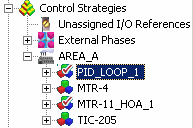

Checking items in and out
Version Control introduces two new types of user actions: Check In and Check Out. In order to perform these actions, your user account must have a key for the lock associated with the VC_CHECKOUT_CHECKIN function. This function is assigned to the Can Configure lock by default. Note that it is possible for your system administrator to create accounts with conflicting privileges. For example, you may have the privilege to create a certain type of configuration item, but you may not be able to check it in.
Security items differ from configuration items in check in and check out behavior. When Version Control is enabled, any User Manager item that is opened or edited is automatically checked out of the Version Control database and any item that was checked out is automatically checked in when it is closed.
To modify a configuration item, check out the item from the Version Control database. Checking out an item makes it available for editing in the appropriate application (for example, DeltaV Explorer, Control Studio, or Recipe Studio). When Version Control is enabled, configuration items are read-only until you check them out. Once you have checked out an item, you can modify it.
Checked out files are marked as follows:

A red check indicates that the item is checked out by the current user. A blue check indicates that the item is checked out by another user. Only one person at a time can have an item checked out.
After you have finished editing an item, you can save the item as you normally would. Saving the item changes the item in the configuration database. To update the item in the Version Control database, you must check it in. Check in retrieves a copy of the item from the configuration database and places it in the Version Control database as a new version. Additionally, the configuration item then becomes read-only again (the item can always be viewed by any user, and its data can be accessed whether it is checked out or not). The Version Control database stores all the changes that have been made to the item. The most recent copy is always available from Version Control. You can also restore or roll back to previous versions of the item.
If you have not made any changes to the file or you do not want your changes checked in, you can select Undo Checkout. Undoing the checkout of an item restores it to the way it was before you checked it out. If there are no changes made to a checked out item, the Check in command does the equivalent of the Undo Checkout command.
You can also check out recursively. This means that you can select an item in DeltaV Explorer and specify that you want to check it out along with all of its subordinate items in the hierarchy. You can also check in recursively.
Recursive operations do not affect assignments. For example, if you check out a controller with assigned modules, the modules are not affected because they are simply referenced to the controller.
Whenever you check in an item, you have an opportunity to add a comment related to the item. Users can go back to the history for this item and see your description of the changes. Use comments that will help you and other users understand the nature and reasons for changes.
When you add a configuration item, Version Control adds the item to the database and checks it out. You must eventually check in the item.
Finally, if you want to update an item periodically but you want to keep the item checked out, use the Keep checked out command.